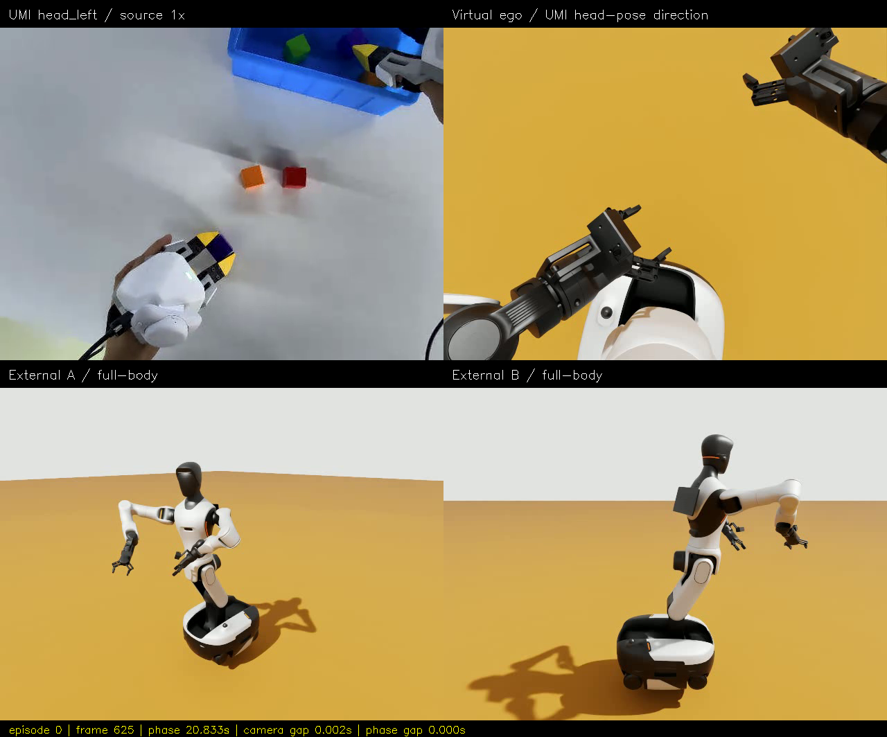
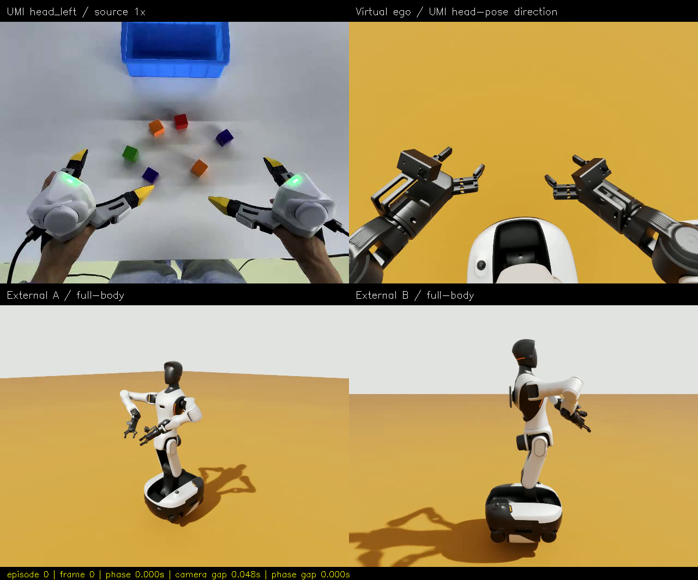
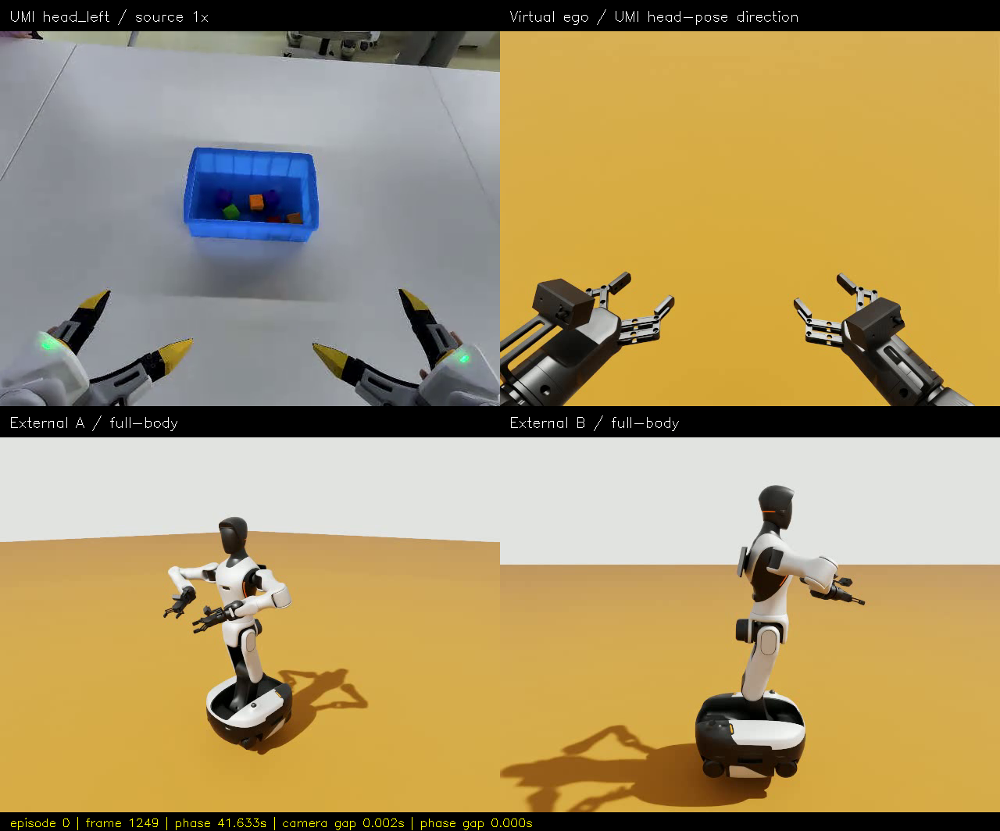
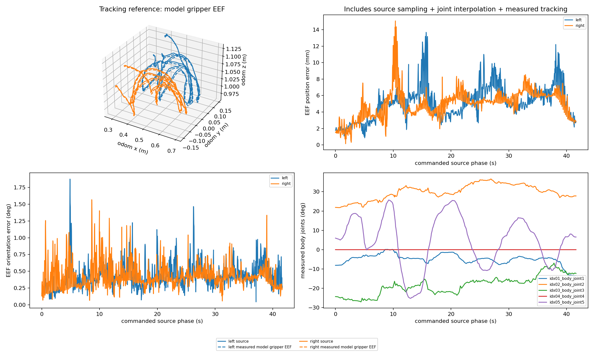
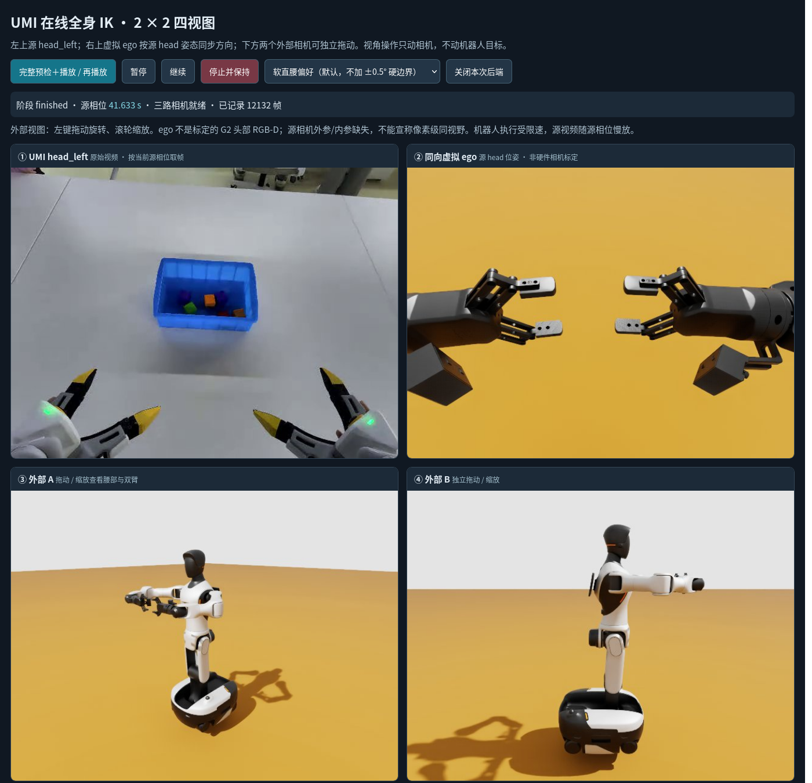

UMI → G2：2 × 2 四视角验收
本页是离线验收资料，下面的 Web 界面是截图，不可点击/拖动。实时控制请先运行 bash wbc_demo/run.sh umi-web，再打开 在线控制台。
2026-10-14 23:01–23:09 · 固定底盘 · 双臂＋腰部 · 夹爪 EEF · 软直腰偏好（无 ±0.5° 硬边界）
左上：UMI head_left；右上：虚拟头部同向镜头；下方：两个外部镜头。右上使用源 head 位姿和共享世界变换，不是标定后的 G2 相机。空场景没有复现物体、桌面或接触。
打开四分屏 MP4 · 1,250 帧 / 30 fps / 41.666667 秒。按源相位重定时，非机器人原速录像。
完整验收说明 · IK 原理与 Web 启动教程 · 图片来源 / SHA256
实测，而非仅检查 IK 残差
| 检查 | 结果 |
|---|---|
| 预检、实际回放、回家 | 215 / 215，通过 |
| 原始 EEF 位置误差，左 / 右 | 最大 13.683 / 15.072 mm；P95 8.548 / 7.247 mm |
| 原始 EEF 朝向误差，左 / 右 | 最大 1.875° / 1.567° |
| 计划 / 实测 roll 最大绝对值 | 0.04334° / 0.04380°；这段不必加半度硬边界 |
| 实测腰部 yaw 使用范围 | 50.885°，腰没有整体锁死 |
| 底盘漂移 | 最大平移 1.379 μm，旋转 0 rad |
| 最大视频时间差 | 相机 262.212 ms / 源相位 41.098 ms；不是严格硬件同步 |
| Web 暂停与外部镜头 | 暂停源相位差 0 s；相机图像像素平均变化 10.497/255；随后恢复并完成 |
同一输出帧的四个方向



轨迹与误差

本地 Web 在线界面

截图在 finished 阶段，机器人已回家，源画面停在末帧；用来验收界面，不能作为末帧动作同步对照。在线支持暂停、恢复、停止与外部镜头拖动/缩放。没有 PyQt/PySide。
核查入口
执行报告 · EEF 指标 · 逐帧时间匹配 · 视频哈希 · 会话操作记录
源：TacVerse/xtac-umi-g1-block-to-box，CC-BY-SA-4.0；源图片经过缩放与拼接。视频和原始日志仅在本机 logs 中；克隆代码后如未复制日志，仍可看版本化 PNG，不能播放视频。当前本机在线会话已关闭，按教程重新启动。